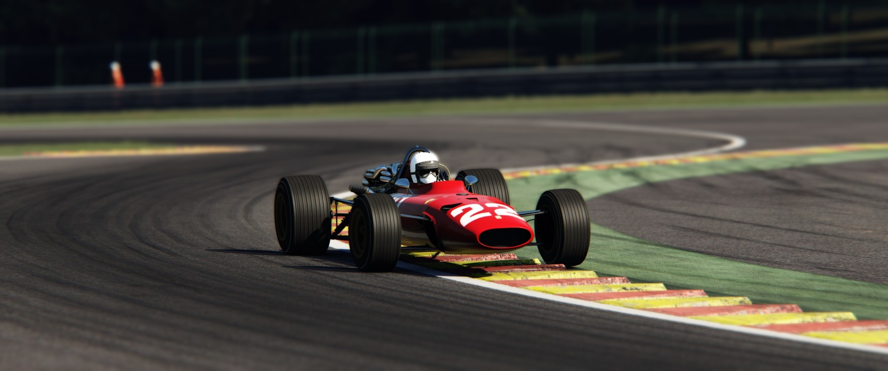

Extra's


Mijn eerdere ervaringen
Ik ben al sinds jong een grote fan van computers. ooit sinds ik het wachtwoord kreeg van mijn moeders oude laptop deed ik alles om erop te zitten. ik was niet veel aan het programmeren maar ik wist al toen dat ik later met computers wou werken. Sinds dat moment heb ik meerdere arduino projecten gemaakt en geprobeerd mijn computer zoveel als mogelijk te begrijpen.
In klas 1 zat ik op havo maar ik was na een slecht jaar gezakt naar mavo 2, mijn mavo heb ik zonder moeite afgemaakt en nu zit ik hier op techniek college schiedam
Mijn Werk ervaring
Ik werk sinds 2025 bij de albert heijn in bentinckplein. Werkte eerst in de bakkerij maar nu werk ik bij de afdeling operatie en doe ik meer belangrijke dingen dan donuts inpakken. ik geniet van mijn werk en probeer altijd goed in een team te werken
Update op de laatste. ik ga nu werken bij domino's aelbrechtskade. lijkt me leuker